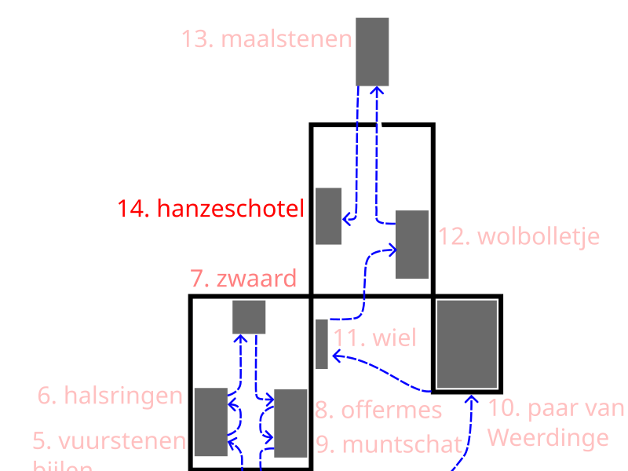

13. Millstones from Haaksbergen. ca. 100 AD


These are millstones from Roman times, dating from approximately the 1st to the 3rd century AD. Such a stone was an important tool on farms and in homes at that time. A millstone consists of two parts: a lower stone that remains stationary, and an upper stone that rotates. Grain is poured into the center of the upper stone. By hand, or with a wooden stick, the upper stone is turned or moved back and forth. The grain is finely ground between the two stones, and the flour flows out the side. That flour was used to make bread, the most important food at that time.
The Romans arrived in the region south of the Rhine around 50 BC. Although they did not live in Twente, there was trade and contact with the people there. As a result, Roman products, such as these millstones, also made their way to the north.
The stones are made of basalt lava from the Eifel region in Germany. This material stayed sharp for a long time and was ideal for grinding grain.
What is remarkable is that these millstones were found in the Haaksbergerveen, buried deep in the peat at a depth of about 2.5 meters. They were likely placed there intentionally. Perhaps these millstones were therefore offered as a sacrifice, for example, to ensure a good harvest or to seek protection. These stones thus reflect not only labor but also faith.
The next highlight is the Koperen Hanze dish engraved with the Humilitas motif.